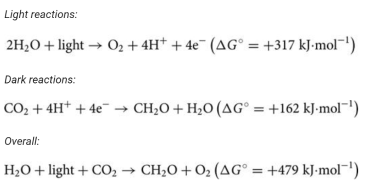

Photosynthesis
Photosynthesis sustains virtually all life on planet Earth providing the oxygen we breathe and the food we eat; it forms the basis of global food chains and meets the majority of humankind's current energy needs through fossilized photosynthetic fuels. The process of photosynthesis in plants is based on two reactions that are carried out by separate parts of the chloroplast. The light reactions occur in the chloroplast thylakoid membrane and involve the splitting of water into oxygen, protons and electrons.
The protons and electrons are then transferred through the thylakoid membrane to create the energy storage molecules adenosine triphosphate (ATP) and nicotinomide–adenine dinucleotide phosphate (NADPH) . The ATP and NADPH are then utilized by the enzymes of the Calvin–Benson cycle (the dark reactions), which converts CO2 into Carbohydrate in the chloroplast stroma . The basic principles of solar energy capture, energy, electron and proton transfer and the biochemical basis of carbon fixation are explained and their significance is discussed.
Photosynthesis is the ultimate source of all of humankind's food and oxygen, whereas fossilized photosynthetic fuels provide 87% of the world's energy. It is the biochemical process that sustains the biosphere as the basis for the food chain. The oxygen produced as a by-product of photosynthesis allowed the formation of the ozone layer, the evolution of aerobic respiration and thus complex multicellular life.
Oxygenic photosynthesis involves the conversion of water and CO2 into complex organic molecules such as Carbohydrate s and oxygen. Photosynthesis may be split into the ‘light’ and ‘dark’ reactions. In the light reactions, water is split using light into oxygen, protons and electrons, and in the dark reactions, the protons and electrons are used to reduce CO2 to Carbohydrate (given here by the general formula CH2O). The two processes can be summarized thus:
2H2O + light -> O2 + 4H+ + 4e- The positive sign of the standard free energy change of the reaction (ΔG°) given above means that the reaction requires energy (an endergonic reaction). The energy required is provided by absorbed solar energy, which is converted into the chemical bond energy of the products.
Photosynthesis converts ∼200 billion tonnes of CO2 into complex organic compounds annually and produces ∼140 billion tonnes of oxygen into the atmosphere. By facilitating conversion of solar energy into chemical energy, photosynthesis acts as the primary energy input into the global food chain. Nearly all living organisms use the complex organic compounds derived from photosynthesis as a source of energy. The breakdown of these organic compounds occurs via the process of aerobic respiration, which of course also requires the oxygen produced by photosynthesis.
Unlike photosynthesis, aerobic respiration is an exergonic process (negative ΔG°) with the energy released being used by the organism to power biosynthetic processes that allow growth and renewal, mechanical work (such as muscle contraction or flagella rotation) and facilitating changes in chemical concentrations within the cell (e.g. accumulation of nutrients and expulsion of waste). The use of exergonic reactions to power endergonic ones associated with biosynthesis and housekeeping in biological organisms such that the overall free energy change is negative is known as ‘coupling’.
Photosynthesis and respiration are thus seemingly the reverse of one another, with the important caveat that both oxygen formation during photosynthesis and its utilization during respiration result in its liberation or incorporation respectively into water rather than CO2. In addition, glucose is one of several possible products of photosynthesis with amino acids and lipids also being synthesized rapidly from the primary photosynthetic products.
The consideration of photosynthesis and respiration as opposing processes helps us to appreciate their role in shaping our environment. The fixation of CO2 by photosynthesis and its release during breakdown of organic molecules during respiration, decay and combustion of organic matter and fossil fuels can be visualized as the global carbon cycle (Figure 1).
The global carbon cycle
The relationship between respiration, photosynthesis and global CO2 and O2 levels.
At present, this cycle may be considered to be in a state of imbalance due to the burning of fossil fuels (fossilized photosynthesis), which is increasing the proportion of CO2 entering the Earth's atmosphere, leading to the so-called ‘greenhouse effect’ and human-made climate change.